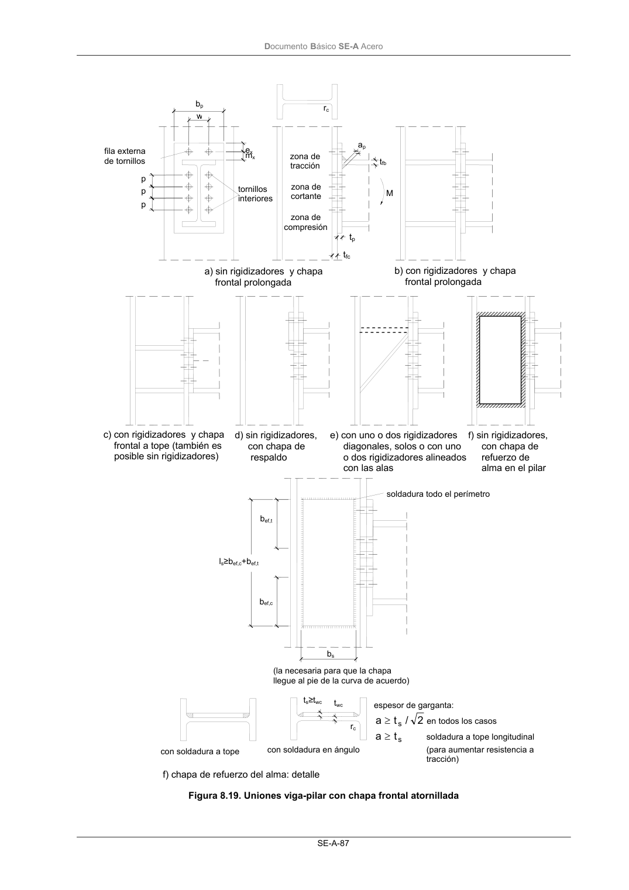

DB-SE-A Acero · edición 2007-10-23 · capa oficial
Documento DB-SE-A-oficial · SHA-256 del PDF 9ed9ea694aabfbda3bfbbef40dfe9223fde05d13c35bc2ba9751e5a96a22a64f
Página física 89 de 168.
Copia fiel del PDF fuente · Fuente oficial
Ficha de la disposición en la fuente oficial
Formato: Texto de la página (Markdown)
Documento Básico SE-A Acero
SE-A-87
Figura 8.19. Uniones viga-pilar con chapa frontal atornillada
soldadura todo el perímetro
(la necesaria para que la chapa
llegue al pie de la curva de acuerdo)
bs
ls≥bef,c+bef,t
bef,t
bef,c
ts≥twc
twc
con soldadura en ángulo
f) chapa de refuerzo del alma: detalle
espesor de garganta:
2
/
t
a
s
≥
en todos los casos
st
a ≥
soldadura a tope longitudinal
(para aumentar resistencia a
tracción)
rc
con soldadura a tope
b) con rigidizadores y chapa
frontal prolongada
fila externa
de tornillos
p
p
p
bp
w
ex
mx
tornillos
interiores
zona de
tracción
zona de
cortante
zona de
compresión
ap
tfb
M
tfc
tp
rc
c) con rigidizadores y chapa
frontal a tope (también es
posible sin rigidizadores)
d) sin rigidizadores,
con chapa de
respaldo
e) con uno o dos rigidizadores
diagonales, solos o con uno
o dos rigidizadores alineados
con las alas
f) sin rigidizadores,
con chapa de
refuerzo de
alma en el pilar
a) sin rigidizadores y chapa
frontal prolongada
